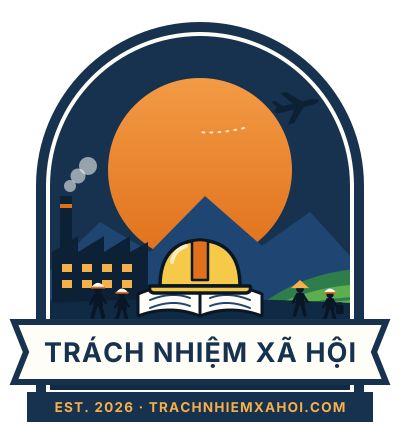

About

Trách Nhiệm Xã Hội (“Social Responsibility”) is a free self-study site that helps workers know the law so they can protect themselves, know where to get help, and build practical life skills.
Who it is for
First: factory workers, people in heavy, hazardous or dangerous jobs, and Vietnamese people working abroad under contract. Later: farmers, informal workers and other vulnerable groups – working children, people who were deceived or trafficked, women facing violence, people with disabilities, people with mental health conditions, and children without care.
The main audience is Vietnamese. The English version supports social auditors, NGOs, brands, employers and anyone who works with Vietnamese workers.
How we write
- Primary sources only: official legal texts, government pages, ILO, IOM, original standards and peer-reviewed research.
- Every legal point shows the document number, the article and the date checked.
- If we are not sure, we say “being verified”. Phone numbers we could not check are not published.
- Neutral writing: we explain the law and practical steps, without political commentary.
- English quotations of Vietnamese law are unofficial translations; the Vietnamese text prevails.
- No data collection: no login, no cookies, no tracking.
The logo
A safety helmet resting on an open book: knowing the law protects you. Behind it are a factory, rice fields and an aeroplane – factory workers, farmers and Vietnamese people working far from home.
The editor
Liêm – a social compliance and occupational health and safety auditor with many years of factory audits in Vietnam and the region. Examples in the articles are general and never name any company or worker.
Other free sites by Liêm
- Kỹ Năng Làm Việc – work skills, from first job to manager.
- Tiếng Anh Căn Bản – English self-study.
- Dạy Nền Tảng – foundation learning for all ages.
- Tâm Hồn Khỏe – mental and spiritual well-being.